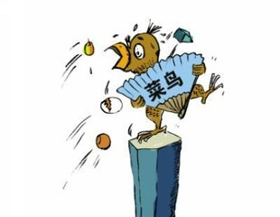

菜鸟学前端


菜鸟学前端
我们的团队有五个人希望大家互相帮助，共同学习。
队员介绍:
队员1：这货有html,css经验，了解javascript基础语法，js无实际编程经验。
队员2：这货在网易前端微专业学习了几个月，没做过项目，菜鸟，来此努力学习。
队员3：这货自称是“破烂王”，熟悉HTML,CSS，JS.
队员4：本尊（鄙视脸）基本掌握了html、css代码书写，能够做一些简单的页面工作，javascript刚开始学，一直在学习前端的大坑中......对前端比较感兴趣。求老司机带我飞！
队员5：这货太任性，只知道他想往前端方向发展，其他还不了解。